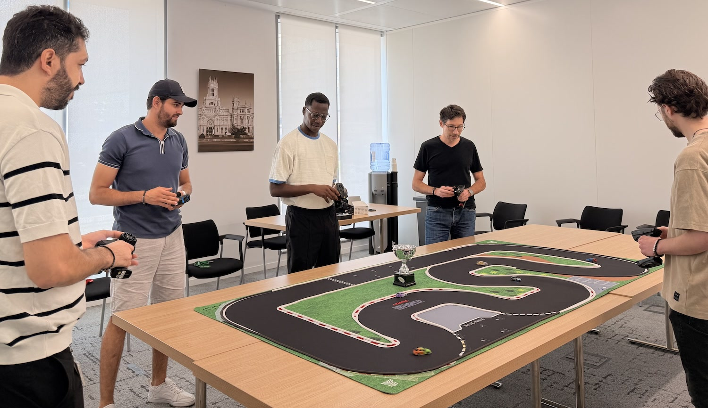

Course amicale à Paris : Housseyne l’emporte à la régularité
Cette semaine à Paris, une course amicale a réuni les pilotes autour du circuit. Housseyne s’impose grâce à sa régularité : des tours propres, peu d’erreurs et une belle constance jusqu’à la dernière manche.
